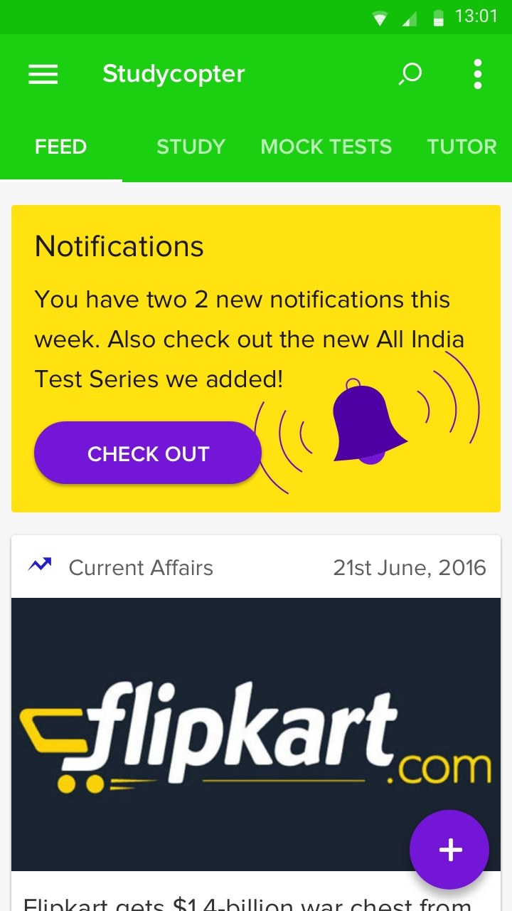
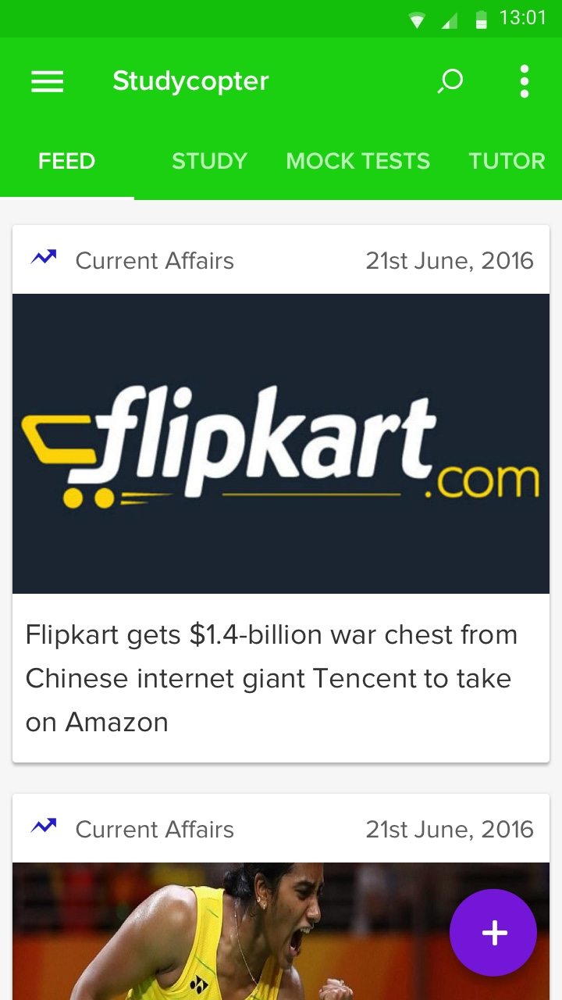
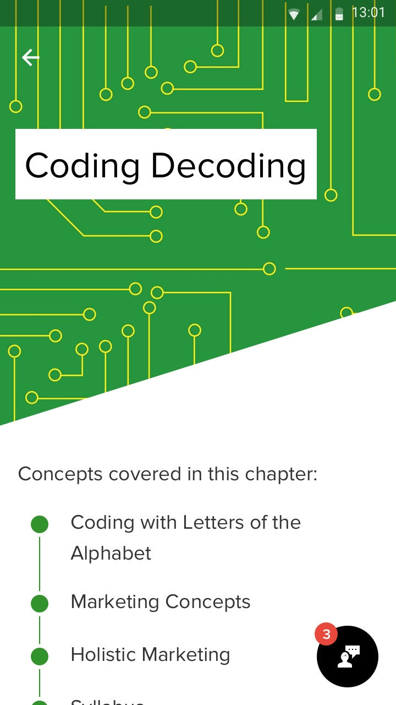
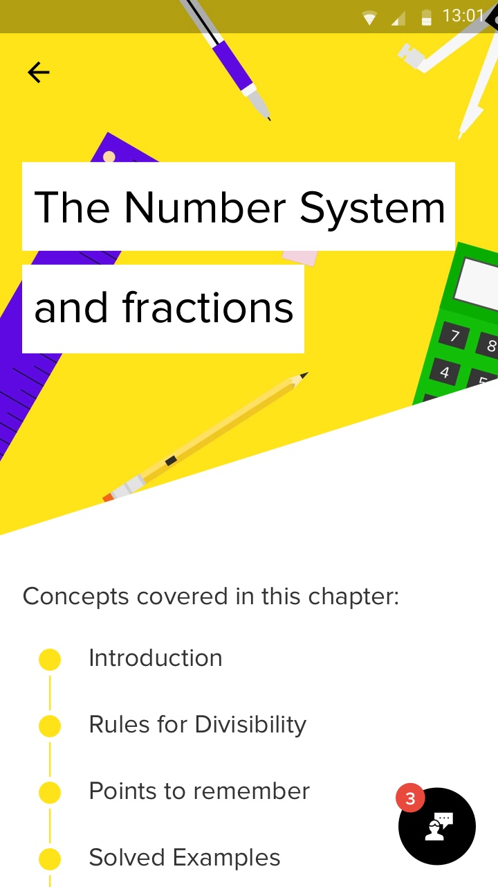
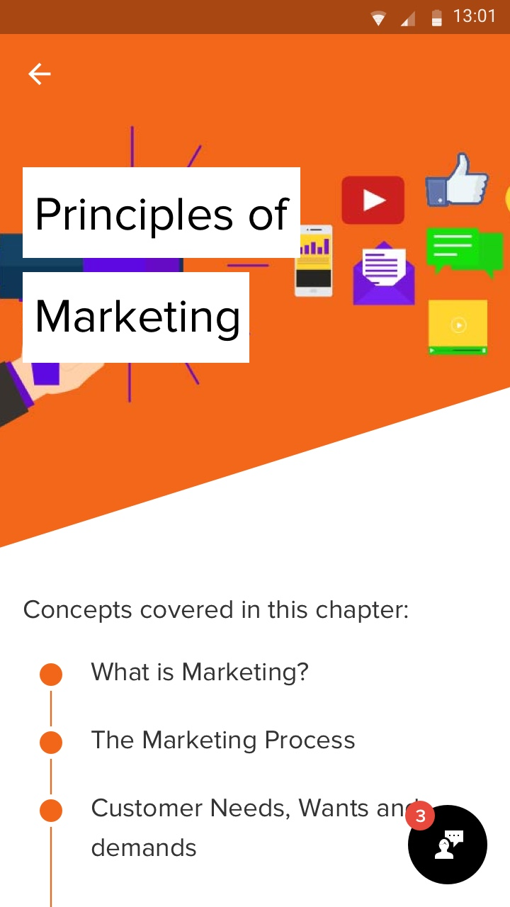
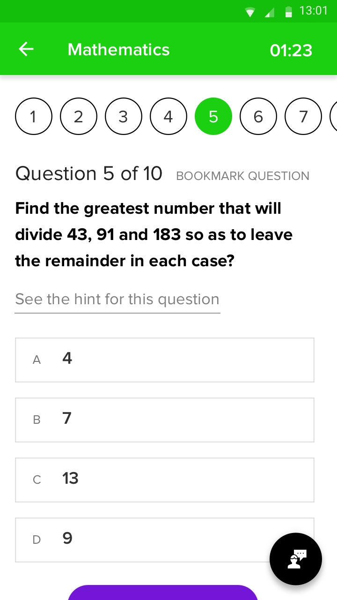
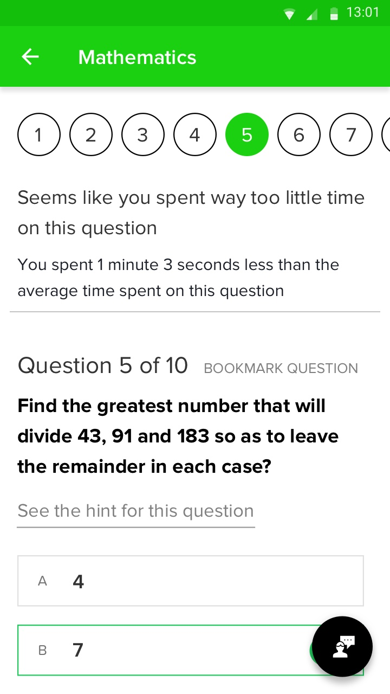

I worked alongside the founder of Studycopter and the engineering team to overhaul the branding and design of the website and the app. We went through several iterations to update the branding, UX and the visual design for both the mediums.
What Studycopter is about
Studycopter offers courses for IBPS, Bank Exam, SSC exams and enables students to ace their exams to get their dream jobs. The target audience for the product is lacs of undergraduate and graduate students who prepare for these exams for several months.
As is the case with many startups, the Studycopter products were designed for quick implementation and were lacking a coherent design system which could scale. With a lot of new features being introduced every few weeks, there was a need to build a design system for an efficient implementation of features in future.
The application uses three different variations of status bars - secondary color, white and black. The app uses the secondary color status bar for screens that require normal viewing, the white status bar for screens that require immersive environment, such as while chatting with the tutor. The black status bar is used in the app for screens that contains bold graphics and colors that need to stand out.
Building the Studycopter Feed
Studycopter Feed is a heterogenous mixture of notifications, current affairs news, exam updates, recruitment posts and user posts. It is important for the user to easily distinguish between the content types for effective browsing. Using cards was a natural solution to this problem. Each of the content type can be identified distinctly with text and color.



The cover illustrations for Studycopter chapters are vibrant and friendly illustrations that helps in making studies look fun and interesting. While reading a concept based chapter, one of the most key concepts is the definition of a term. We grouped the definition seperately to make sure it is well understood by the student. This turned out to be an important feature for the study material chapters. We use grouping of content to reduce the cognitive load of the chapter. Presenting the content in groups help in reducing the perception of the chapter's length and keeps the student's concentration and interest intact.



Reading and Chapters Section -
While the design for chapters section requires to be more reading centered, there was also a need for this section to look cohesive with the rest of the application and the brand is reflected in this section as well. We decided to use PT Serif as the typeface for the text in the reading section as it complements Proxima Nova very well and is legible and easy to read. Both the typefaces are modern typefaces made for screen text and therefore make a great pairing.
Reading Section Illustrations -
The illustrations are created to be fun, inviting and bold.



The visual weight of the question statement makes it stand out and look more prominent.



My Tutor is a key feature of the application that enables students to interact with teachers while studying and while solving problem sets. The contrast between the background and the text color of the message ensures that the chat message stands out and is easy to read. The rounded container for the messages gives it a friendly and helpful look.